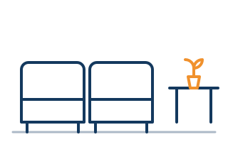

Furniture trends move slower than fashion, which is the whole point of them. A sofa is a five-to-fifteen-year decision. So when we look at what's trending in furniture for 2026, the only question that matters is: will you still like this in year four?
Here's what we're seeing across showroom floors, and — more usefully — which of it survives contact with an actual living room.
1. Curves, but liveable
The curved sofa isn't new. What's new is that it stopped being a photoshoot prop. The first wave was deep, low and almost fully circular: beautiful in a 40-square-metre loft, unusable in a normal room where one wall has a radiator and another has a door.
The 2026 version keeps the soft silhouette and gives back the ergonomics. Expect a gentle arc rather than a semicircle, a seat height around 43–45 cm, and a seat depth of 55–60 cm — deep enough to curl up in, shallow enough to sit upright and eat dinner. Arms roll instead of turning at right angles. Backs are one continuous sweep rather than three separate cushions.
The same softening is happening everywhere else: arched mirrors, pill-shaped coffee tables, rounded-corner sideboards, headboards with a dome top. A room full of hard rectangles reads as an office. Two or three curved pieces are usually enough to fix that.
Buying tip: Measure the wall and the doorway. A curved sofa's widest point is its back, not its footprint — a three-seater that measures 220 cm along the wall can bulge to 240 cm at the centre and refuse to turn a stairwell corner. Ask for the diagonal depth before you order.
2. Warm minimalism replaces the white box
Grey is over. Not fading — over. The cool-toned, all-white, concrete-and-chrome interior that dominated the last decade has been replaced by what most designers are now calling warm minimalism: the same restraint and clean lines, rendered in materials that feel like something.
In practice that means warm-toned woods (white oak, ash, walnut) instead of grey-washed ones, and a palette built on clay, mushroom, oat, olive and a soft butter yellow. Walls go plaster-textured rather than flat matte. Surfaces get honed instead of polished.
This is the single easiest trend to adopt without replacing furniture, because most of it is textiles and paint. A grey sofa plus a clay throw, two linen cushions and a warm-toned rug reads completely differently from the same sofa with a black-and-white geometric cushion set.
The fastest way to date a room isn't the furniture — it's the undertone of the neutrals around it.
3. Modular seating stops being a compromise
Modular sofas used to be what you bought when you moved a lot. Now they're what you buy because the good ones are genuinely better designed.
Three things changed. Connectors got stronger, so modules stop drifting apart mid-film. Backrests got properly upholstered on all sides, so a module can float in the middle of a room instead of hugging a wall. And manufacturers started selling single modules years after the original purchase, which turns a sofa into something you extend rather than replace.

For renters and anyone in a first flat, this is the most practical trending furniture on the list. A two-module setup in a small living room becomes a four-module L in the next place. Check the connector type before you buy: metal bracket or dovetail connectors survive repeated disassembly; plastic clips generally don't.
4. The round pedestal dining table
The rectangular six-seater is quietly losing ground to a round table on a single central pedestal, and the reasons are almost entirely practical.
A round table has no corners to walk into and no legs to kick, which matters enormously in a room where the table sits in a walkway. It seats people more flexibly — a 120 cm round comfortably takes four and squeezes six at a push, in less floor area than a rectangle doing the same job. And with no corner legs, every chair position is a good one.
| Consideration | Round pedestal | Rectangular |
|---|---|---|
| Best room shape | Square rooms, open-plan corners, walkways | Long, narrow rooms; galley kitchens |
| Seats 6 in | ~140 cm diameter | ~180 × 90 cm |
| Clearance needed | 90 cm all round | 90 cm all round, plus corner allowance |
| Conversation | Everyone faces everyone | Splits into two ends |
| Watch out for | Pedestal base can foul chair legs — check the base diameter | Corner legs limit where chairs can go |
If you host large groups more than a few times a year, a rectangle with an extension leaf is still the sensible answer. For everyone else, the round pedestal is the better daily table.
5. Lighting as sculpture
Lighting has become the piece people notice first, and it's where a modest budget goes furthest. A single sculptural floor lamp — a paper shade, a hand-thrown ceramic base, a curved arc over a sofa — does more for a room than another side table.
The functional shift underneath the trend matters more than the shapes: rooms are moving away from one bright ceiling light towards three or four low, warm sources at different heights. Table lamp, floor lamp, wall sconce, something under a shelf. Bulbs are landing around 2700 K — warm white — and almost everything worth buying is dimmable.
The 5 p.m. test: Turn off the ceiling light. If the room is unusable, you don't have a furniture problem — you have a lighting problem, and it's a much cheaper one to fix.
6. Texture over pattern
With the palette dialled down to warm neutrals, texture is doing the work pattern used to. Fluted and reeded wood on cabinet fronts. Travertine and unfilled stone with its pits left visible. Brushed linen, chunky wool, cane webbing on a wardrobe door.
Bouclé is the interesting case. It defined the last few years, and it is now firmly in accent-chair territory rather than sofa territory — largely because it pills, snags on zips and holds every bit of dust in a piece that gets sat on daily. If you love the look, put it somewhere that gets used twice a week, not twice an hour.
7. Warm metals, unlacquered
Chrome and matte black have given way to brass, bronze and antique nickel. The genuinely new part is the finish: unlacquered brass, which arrives bright and then darkens with handling into an uneven patina.
That's either the appeal or the dealbreaker. It will not stay uniform, fingerprints show for the first few months, and there is no putting it back. If that sounds like character, it's the warmest detail you can add to a handle, a lamp base or a table leg. If it sounds like damage, buy lacquered brass and accept that it stays exactly as it looks in the photo.
Two trends we'd skip
- Oversized "cloud" sofas in light fabric. Enormously comfortable, endlessly photographed, and a maintenance project. The loose feather-down cushions that create the slouch need plumping daily to avoid looking deflated, and a pale removable cover on a piece that large is a laundry commitment most people quietly abandon by month three.
- Full-room colour drenching. Painting walls, trim, ceiling and radiator the same saturated shade photographs beautifully and is spectacular in a small, low-traffic room like a study or a downstairs loo. In a main living room it collapses the sense of depth, and repainting is a weekend you won't get back. Try it somewhere small first.
Frequently asked questions
What furniture style is trending in 2026?
Warm minimalism. It keeps the clean lines of the minimalist decade but swaps cold grey and white for warm woods, clay and butter tones, and tactile fabrics. Curved silhouettes, modular seating and sculptural lighting are the pieces carrying the look.
Are curved sofas still in style?
Yes — but the shape has changed. The deep, low, near-circular sofa has given way to a gentler arc at a normal seat height and depth, which is far easier to live with and much easier to place against a wall.
Is bouclé furniture out of style?
It's no longer the default. Bouclé still works beautifully on a single accent chair, but brushed linens, heavy wools and leather have taken over on sofas and daily-use pieces — mostly because bouclé pills and traps dust.
How long should a good sofa last?
A sofa on a kiln-dried hardwood frame, with eight-way hand-tied or sinuous steel springs and high-resilience foam, should give ten to fifteen years of daily use. Softwood or particleboard frames with thin unwrapped foam typically start sagging in three to five.
What's the one trend worth spending on?
Lighting. It's the cheapest way to change how a room feels, it moves with you, and unlike a sofa it never has to match anything you already own.
Where to start
If you're furnishing from scratch, buy in this order: the sofa (the piece you touch most), then lighting, then the dining table, then everything else. If you're refreshing, invert it — new lamps, a warm-toned rug and three cushions will change a room more than another chair will, for a fraction of the money.
And whatever you buy, check the frame, the foam density and the return window before you check the trend list. Trends are a starting point for a search, not a reason to buy.